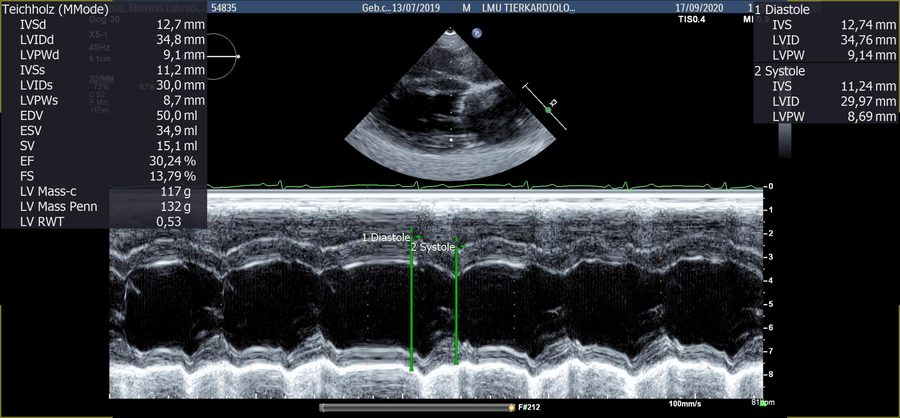
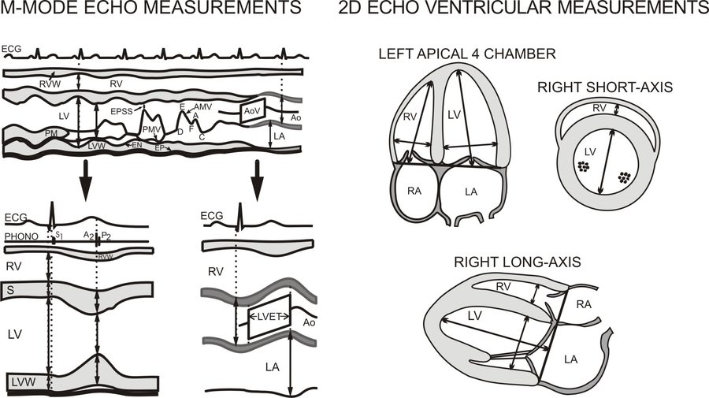

ESAVS Echocardiography · Chapter 04
📈
M-Mode 測量與體重指標化
LVIDd/LVIDs、FS、EPSS 等基本 M-Mode 測量方法，以及為何要把測量值依體重指標化（normalization）才能跨體型比較。
M-Mode
FS
體重指標化
第 4 / 18 節 · 原始講義：Measurement of cardiac dimensions – M-Mode and Normalizations
📈 M-Mode 基本測量
📏
LVIDd / LVIDs
左心室舒張／收縮末期內徑（Enddiastolic／Endsystolic Diameter）
📊
FS（Fractional Shortening）
FS(%) = (EDD − ESD) / EDD × 100
🧮
EF（Ejection Fraction）
EF(%) = (EDV − ESV) / EDV × 100（體積法，如 Simpson 或 Teichholz，詳見第 7 節）
🎯
EPSS
E-point to Septal Separation：二尖瓣 E 點到室中膈的距離，DCM 篩檢重要參數
M-Mode 示意圖：舒張末期（左，室中膈與後壁距離最大）量得 EDD；收縮末期（中，室中膈往下、後壁往上移動，腔室最窄）量得 ESD
⚠️ 臨床案例提醒（Labrador「Buddy」）：3 歲拉不拉多因暈厥被前獸醫測得 FS 13%，判斷為重度 DCM 並建議安樂死。第二意見重新測量後 FS 實為 34%，LVIDd/LVIDs 皆在正常範圍——原因是 M-Mode 游標未垂直對準腔室造成測量誤差。單一測量數字不能只看一次，務必核對測量角度與參考值，暈厥原因後來發現是牽繩拉扯頸部所致。
M-Mode 常見限制：游標未必能與腔室垂直對齊、短軸「oblique」切面不易察覺、矛盾性室中膈運動（paradoxic septal motion）時不應使用 M-Mode 測量（會產生錯誤的低 FS），應改用 2D 影像評估。長軸與短軸測量會有些微差異（短軸測得的數值通常略大），但差異不大。
MAPSE：另一個 M-Mode 全域收縮功能指標
MAPSE（Mitral Annulus Plane Systolic Excursion）：以 M-Mode 測量二尖瓣環的收縮期位移幅度，作為左心室整體收縮功能的簡易全域指標。
📐 為什麼要「體重指標化」（Normalization）？
M-Mode 測量值與體重並非線性關係，而是曲線關係（curvilinear），因此發展出多種「除以體重的次方（kgexp）」的指標化公式，讓不同體型的犬隻可以用同一套切點值比較。以下為兩套常用指標化係數：
| 研究 | LVIDd 指數 | LVIDs 指數 | 切點（LVIDd-N） |
|---|
| Cornell（EPIC 準則採用） | ÷ kg0.294 | ÷ kg0.315 | ≥ 1.7 視為擴大（ACVIM B2） |
| Esser／Wess（7651 犬族群，2020） | ÷ kg0.322 | ÷ kg0.346 | 97.5 百分位 1.63；95.0 百分位 1.59 |
⚠️ 大型犬使用 Cornell 係數換算的 1.7 切點可能偏低（原研究以小型犬為主），Esser/Wess 較大族群研究的切點在大型犬可能更適用；有品種專屬常模時應優先使用品種常模（Sighthound／視覺獵犬心臟本來就偏大，務必使用專屬參考值，不可套用一般公式，詳見第 18 節常模值總表）。
💡 建議把這些指標化公式直接寫進機器的測量程式或 Excel 表格中，檢查當下就能自動換算，不用每次手算。
🧮 互動計算機
FS 計算機
公式：FS(%) = (EDD − ESD) / EDD × 100
| FS（Fractional Shortening） | – |
LVIDd / LVIDs 體重指標化計算機
依 Cornell 或 Esser/Wess 指標化公式計算，並比對常見切點。品種專屬常模請優先使用品種常模。
| LVIDd-N（Cornell，切點 ≥1.7） | – |
| LVIDs-N（Cornell） | – |
| LVIDd-N（Esser/Wess，97.5% 切點 1.63） | – |
| LVIDs-N（Esser/Wess，97.5% 切點 1.09） | – |
📷 原始講義圖例
下列為原始 ESAVS 講義中的實際截圖／圖表，版權屬 Dr. Gerhard Wess 所有，僅供內部學習參考，請勿另行公開散布。

M-Mode 實際測量畫面,可見游標與數值面板

M-Mode 與 2D 心室測量位置對照圖(左心尖四腔、右側短軸、右側長軸)